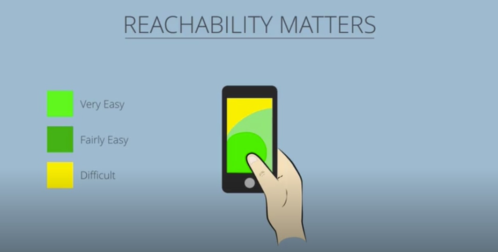

Doing Stuff width Web Things - Notes
Well, the PDF is interesting, is good to start. resume the steps that you need to do and know to create a good webpage. The PDF starts with the tools that you need (Computer width a good browser) then explains a little process to start to create a new
project (Think, Design, Test, and Create).
The basic tools of HTML, CSS, and JavaScript. Html defines the structure, CSS defines the style and design and JS defines the interaction with the user.
Then starts to talk more about JS and how to use it. Functions and events, like interactive buttons, results, and styles and continue to focus on how to replicate JS in the best way with some examples and exercises. This is the first view
of the book.
Master Mobile UX - Notes
In the first part of the 21st century, the computer was a principal part of communication in the world, In 2007 Steve Jobs announced the iPhone the first smartphone, and the start of many models of smartphones in the market.
This
changed everything because we have more devices to see everything, information, videos, photos, applications, etc. It was the start of the responsive design.
But, the responsive website is not at all, Was where started the phrase
"Mobile First" Was a concept that defined how should be a design. Starting thinking with the small element and the growth to the future and size. In this way, the design and elements could be efficient in many ways, "Start small and scale
up".
The concept UX or user experience starts in this timeline, before mentioned. with many useful tips to start:
Be there: To help move someone along their decision journey, and deepen their loyalty.
Be useful:
Only 9% of the users stay if it doesn't satisfy their needs.
Be quick: It's not just about fast loading, the functionality must be there as well.

These green areas on the screen are the best to add a button, menu, or a call to action. The primary controls. The user experience should be easy and understandable.
In resume, the UX is the way that you can simplify some activity to the user. This practice is literally new in these 15 years many methods like "Mobile First" start to appears to facilitate the interaction.